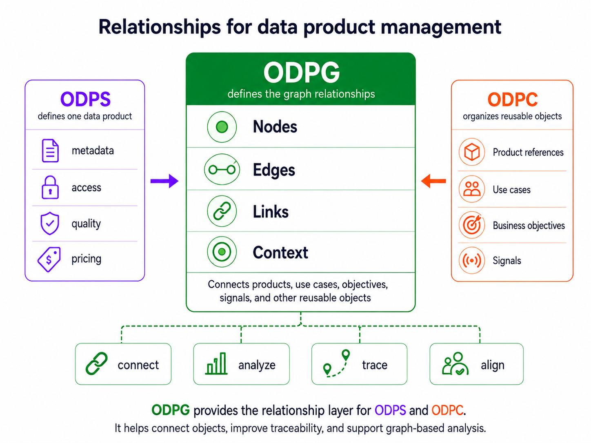

OPEN DATA PRODUCT GRAPHS - The Linux Foundation
Release Version 1.0
The key words “MUST”, “MUST NOT”, “REQUIRED”, “SHALL”, “SHALL NOT”, “SHOULD”, “SHOULD NOT”, “RECOMMENDED”, “NOT RECOMMENDED”, “MAY”, and “OPTIONAL” in this document are to be interpreted as described in BCP 14 (RFC 2119 and RFC 8174) when, and only when, they appear in all capitals, as shown here.
The specification is shared under Apache 2.0 license. Development of the specification is under the umbrella of the Linux Foundation.
| Topic | Link | Description |
|---|---|---|
| Version source | Open Data Product Graphs 1.0 on GitHub | Official source repository for the ODPG 1.0 specification |
| Contribute | Raise an issue in GitHub | Submit issues or suggestions to the specification maintainers |
Introduction
Modern organizations increasingly operate across highly distributed ecosystems composed of data products, APIs, workflows, governance controls, AI systems, analytical capabilities, business domains, and operational processes that collectively contribute to strategic business execution. Despite significant investments in data platforms and governance programs, many organizations still struggle to understand how technical assets connect to business value because metadata, governance, strategy, and operational context are often managed independently from one another.
Traditional metadata catalogs primarily focus on technical discovery, indexing, and lineage management, which makes them valuable for inventory and governance use cases but insufficient for understanding the broader strategic relationships that exist between business objectives, operational capabilities, AI systems, data products, and measurable outcomes.
Open Data Product Graphs ODPG-v1.0 addresses this challenge by introducing a machine-readable graph specification that enables organizations to describe and manage the relationships between interconnected entities across the enterprise ecosystem, thereby transforming isolated specifications into connected intelligence structures capable of supporting governance reasoning, strategic alignment, semantic interoperability, AI traversal, impact analysis, and reusable data ecosystems.
Through ODPG, organizations can represent questions such as:
- Which use cases depend on this data product?
- Which business objectives are supported by this use case?
- Which KPIs are measured through these data products?
- Which data products contribute to the same strategic objective?
- Which AI agents are consuming these APIs?
- Which policies govern this workflow or domain?
- Which business areas contain unsupported strategic objectives?
- Which strategic opportunities emerge from multiple related use cases?
By enabling organizations to describe these relationships using a standardized graph structure, ODPG provides the foundation for graph-native enterprise intelligence ecosystems.
Relationship to the Open Data Products Specification Family
The Open Data Products specification family consists of interoperable standards that collectively support the lifecycle, governance, semantics, discovery, interoperability, and intelligence of data ecosystems, where each specification focuses on a specific responsibility while remaining interoperable with the others.

| Specification | Role |
|---|---|
| ODPS | Defines the structure and specification of a data product |
| ODPV | Defines shared vocabulary and semantic meaning |
| ODPC | Defines catalog interoperability and discovery structures |
| ODPG | Defines graph relationships between data products, use cases, objectives, policies, and related entities |
Within this ecosystem, ODPS defines the product structure itself, ODPV defines semantic consistency and shared meaning, ODPC defines discovery and catalog interoperability, while ODPG defines the graph relationships that connect those specifications into an interconnected enterprise ecosystem capable of supporting strategic intelligence and machine reasoning.
As a result, ODPG should be understood as the relationship and intelligence layer of the Open Data Products ecosystem because it provides the contextual structure necessary for understanding how different enterprise assets connect to each other operationally, strategically, semantically, and organizationally.
Purpose
The purpose of ODPG is to provide organizations with a standardized machine-readable graph specification that enables them to model relationships between data products, business objectives, operational use cases, governance structures, APIs, workflows, AI systems, and strategic capabilities in a consistent and interoperable manner.
Through this graph model, organizations can establish visibility into how data products contribute to business outcomes, how governance policies propagate across interconnected assets, how AI agents interact with enterprise systems, how KPIs align with strategic goals, and how operational dependencies affect downstream capabilities.
ODPG therefore enables organizations to:
- connect use cases to data products
- connect data products to business objectives
- represent strategic contribution paths
- model governance relationships
- support impact analysis
- identify strategic gaps and overlaps
- support semantic traversal
- enable AI reasoning across enterprise ecosystems
- support graph-native interoperability
- provide reusable relationship intelligence structures
Graph Toolkit
Snippet of YAML version:
schema: https://opendataproducts.org/odpg-v1.0/schema/odpg.yaml
version: "1.0"
kind: Graph
graph:
metadata:
id: GRAPH-AVIATION-001
name:
en: Aviation Data Product Value Graph
description:
en: Graph describing how aviation data products, use cases, policies,
agents, opportunities, and business objectives are connected.
domain:
en: Aviation
purpose:
en: Support portfolio analysis, value mapping, governance review,
and AI-assisted reasoning.
status: draft
visibility: public
nodes: []
edges: []
ODPG is published in several forms for different users and tools. This specification provides the human-readable documentation, while the schema, graph object records, and Python scripts provide machine-readable resources for validation, conversion, graph reasoning, AI retrieval, traversal planning, strategic analysis, automation, and visualization. Use odpg.yaml or odpg.json to validate graph files, objects.jsonl for lightweight relationship classification and graph retrieval, the ODPG Python scripts for command-line graph conversion, validation, and reasoning tasks, and the Graph Explorer generator when creating a visual inspection interface for ODPG YAML.
| Resource | Format | Purpose |
|---|---|---|
llms.txt |
Text | AI agent guidance for discovering and using ODPG resources |
odpg.yaml |
YAML Schema | YAML representation of the ODPG validation schema |
odpg.json |
JSON Schema | JSON representation of the ODPG validation schema |
objects.jsonl |
JSONL | Agent-friendly one-object-per-line file for retrieval, relationship classification, traversal planning, graph reasoning, and lightweight tools |
odpg_validate.py |
Python | Validates graph structure, node integrity, edge integrity, confidence values, and core ODPG semantics |
odpg_convert.py |
Python | Converts external graph formats such as JSON-LD, GraphML, GraphSON, RDF, OpenCypher, GQL, and Gremlin into ODPG YAML |
odpg_summary.py |
Python | Produces graph metadata, node counts, edge counts, node types, edge types, and confidence summaries |
odpg_traverse.py |
Python | Discovers relationship paths from a node with optional relationship filters and reverse traversal |
odpg_analyze.py |
Python | Runs governance and strategic checks for orphan KPIs, unsupported objectives, ungoverned assets, and low-confidence relationships |
odpg_agent_context.py |
Python | Extracts trusted graph context around a focus node for AI-agent use |
generate_graph_explorer.py |
Python | Generates a standalone HTML Graph Explorer from an ODPG YAML graph |
The Markdown tables in this specification are intended for human readers. The schema, JSONL, and graph tooling files are intended for programmable use, automation, validation, AI retrieval, traversal, reasoning, strategic analysis, AI-agent interaction, and graph visualization.
Python Toolkit Scripts
The ODPG Python toolkit separates the most important command-line operations into focused scripts while sharing the same internal graph rules through odpg_toolkit_core.py:
| Script | Toolkit Coverage | Purpose |
|---|---|---|
odpg_validate.py |
Graph Validation Toolkit | Validate graph structure, required fields, node integrity, edge integrity, confidence values, and core ODPG semantics |
odpg_convert.py |
Graph Conversion Toolkit | Convert JSON-LD, GraphML, GraphSON, RDF, OpenCypher, GQL, and Gremlin graph inputs into ODPG YAML |
odpg_summary.py |
Graph Validation Toolkit / AI Agent Toolkit | Produce a JSON summary of metadata, node counts, edge counts, node types, edge types, and confidence values |
odpg_traverse.py |
Graph Traversal Toolkit | Discover relationship paths from a node, optionally filtering by relationship type or traversing incoming relationships |
odpg_analyze.py |
Strategic Intelligence Toolkit / Governance analysis | Detect orphan KPIs, unsupported objectives, ungoverned assets, low-confidence relationships, and use cases without strategic contribution |
odpg_agent_context.py |
AI Agent Toolkit | Extract trusted graph context around a focus node, including forward paths, reverse paths, related nodes, and governance signals |
Example usage:
python source/scripts/odpg_validate.py -i "/path/to/graph.yml"
python source/scripts/odpg_convert.py -i "/path/to/source.graphml" -o "/path/to/graph.yml"
python source/scripts/odpg_summary.py -i "/path/to/graph.yml"
python source/scripts/odpg_traverse.py -i "/path/to/graph.yml" --start "DP-001" --depth 2
python source/scripts/odpg_analyze.py -i "/path/to/graph.yml"
python source/scripts/odpg_agent_context.py -i "/path/to/graph.yml" --node "AGENT-001" --depth 2
Testing the Python Toolkit
The repository includes pytest coverage for the shared toolkit logic used by the validation and reasoning scripts. The tests verify graph validation, invalid edge handling, graph summaries, traversal paths, strategic and governance analysis, agent-context extraction, and JSON output writing.
python -m pip install -r requirements-dev.txt
python -m pytest tests/test_odpg_toolkit.py
Specification Structure
Example of details object usage:
schema: https://opendataproducts.org/odpg-v1.0/schema/odpg.yaml
version: 1.0
kind: Graph
graph:
metadata:
id: GRAPH-AVIATION-001
name:
en: Aviation Data Product Value Graph
description:
en: Graph describing how aviation data products, use cases, policies, agents, opportunities, and business objectives are connected.
nodes: []
edges: []
An ODPG document consists of a standardized graph structure composed of metadata, graph nodes, and graph edges, where the graph itself represents a connected ecosystem of business, operational, technical, governance, and AI-related entities.
The root structure of an ODPG document is defined as follows:
Mandatory attributes
The following root properties are defined within an ODPG document.
| Property | Type | Required | Description |
|---|---|---|---|
schema |
URL | Yes | URL of the ODPG schema used for validation |
version |
String or number | Yes | Version of the ODPG specification |
kind |
String | Yes | Type of graph specification document. Must be Graph |
graph |
Object | Yes | Container for graph metadata, nodes, and edges |
metadata |
Object | Yes | Metadata describing the graph |
metadata.id |
String | Yes | Unique identifier of the graph |
metadata.name |
Object | Yes | Human-readable graph name using language-specific values |
metadata.name.en |
String | Yes | English name of the graph. |
metadata.description |
Object | Yes | Human-readable graph description using language-specific values |
metadata.description.en |
String | Yes | English description of the graph. |
nodes |
Array of node objects | Yes | Collection of graph node objects |
edges |
Array of edge objects | Yes | Collection of graph edge objects |
Optional attributes and options
Example of catalog metadata usage:
schema: https://opendataproducts.org/odpg-v1.0/schema/odpg.yaml
version: 1.0
kind: Graph
graph:
metadata:
id: GRAPH-AVIATION-001
name:
en: Aviation Data Product Value Graph
description:
en: Graph describing how aviation data products, use cases, policies, agents, opportunities, and business objectives are connected.
domain:
en: Aviation
purpose:
en: Support portfolio analysis, value mapping, governance review, and AI-assisted reasoning.
tags:
- aviation
- predictive-maintenance
- fleet-availability
status: draft
visibility: public
owner:
name: Aviation Data Product Team
email: aviation-data-products@example.com
nodes: []
edges: []
| Attribute | Type | Description |
|---|---|---|
metadata.domain |
Object | Business, industry, or subject domain covered by the graph. Supports language-specific values. |
metadata.domain.en |
String | English domain name. |
metadata.purpose |
Object | Explanation of why the graph exists and how it should be used. Supports language-specific values. |
metadata.purpose.en |
String | English purpose statement. |
metadata.tags |
Array of strings | Keywords used for discovery, filtering, grouping, and search. |
metadata.status |
String | Current status of the graph. Recommended values include draft, active, deprecated, and archived. |
metadata.visibility |
String | Intended visibility of the graph. Recommended values include public, internal, restricted, and private. |
metadata.owner |
Object | Party responsible for the graph. |
metadata.owner.name |
String | Name of the owning person, team, or organization. |
metadata.owner.email |
String | Contact email for the owning party. |
Graph Catalog
Example of the catalog object usage:
schema: https://opendataproducts.org/odpg-v1.0/schema/odpg.yaml
version: 1.0
kind: Graph
graph:
metadata:
id: GRAPH-AVIATION-001
name:
en: Aviation Data Product Value Graph
description:
en: Graph describing how aviation data products, use cases, policies, agents, opportunities, and business objectives are connected.
domain:
en: Aviation
purpose:
en: Support portfolio analysis, value mapping, governance review, and AI-assisted reasoning.
tags:
- aviation
- predictive-maintenance
- fleet-availability
status: draft
visibility: public
owner:
name: Aviation Data Product Team
email: aviation-data-products@example.com
nodes:
- id: UC-AVIATION-001
type: UseCase
$ref: ../usecases/predictive-maintenance-aircraft.yaml
- id: OBJ-AVIATION-001
type: BusinessObjective
$ref: ../objectives/increase-fleet-availability.yaml
- id: KPI-AVIATION-001
type: KPI
$ref: ../kpis/fleet-availability-rate.yaml
- id: DP-AVIATION-001
type: DataProduct
$ref: ../products/aircraft-maintenance-history.yaml
- id: DP-AVIATION-002
type: DataProduct
$ref: ../products/aircraft-sensor-events.yaml
- id: API-AVIATION-001
type: API
$ref: ../apis/maintenance-risk-score-api.yaml
- id: POL-AVIATION-001
type: Policy
$ref: ../policies/aviation-data-quality-policy.yaml
- id: AGENT-AVIATION-001
type: Agent
$ref: ../agents/maintenance-recommendation-agent.yaml
- id: OPP-AVIATION-001
type: StrategicOpportunity
$ref: ../opportunities/reduce-unscheduled-maintenance.yaml
edges:
- from: UC-AVIATION-001
to: DP-AVIATION-001
type: uses
confidence: high
- from: UC-AVIATION-001
to: DP-AVIATION-002
type: uses
confidence: high
- from: UC-AVIATION-001
to: OBJ-AVIATION-001
type: supports
confidence: high
- from: DP-AVIATION-001
to: OBJ-AVIATION-001
type: contributesTo
confidence: medium
- from: DP-AVIATION-002
to: OBJ-AVIATION-001
type: contributesTo
confidence: medium
- from: KPI-AVIATION-001
to: OBJ-AVIATION-001
type: measures
confidence: high
- from: DP-AVIATION-001
to: KPI-AVIATION-001
type: tracks
confidence: medium
- from: DP-AVIATION-001
to: API-AVIATION-001
type: exposes
confidence: high
- from: DP-AVIATION-001
to: POL-AVIATION-001
type: governedBy
confidence: high
- from: AGENT-AVIATION-001
to: DP-AVIATION-001
type: uses
confidence: high
- from: AGENT-AVIATION-001
to: API-AVIATION-001
type: uses
confidence: high
- from: UC-AVIATION-001
to: OPP-AVIATION-001
type: identifies
confidence: medium
- from: OPP-AVIATION-001
to: OBJ-AVIATION-001
type: alignWith
confidence: medium
The following example demonstrates a complete ODPG document connecting use cases, business objectives, KPIs, data products, governance policies, APIs, AI agents, and strategic opportunities into a unified value graph.

Graph Explorer Example
The following YAML example can also be used as the input for a lightweight Graph Explorer generator capable of transforming an ODPG document into an interactive HTML-based visualization. This allows organizations to convert machine-readable graph specifications into human-readable graph catalogs that can be explored visually through a browser without requiring a dedicated graph database or enterprise catalog platform.
The Graph Explorer concept is intended to demonstrate how ODPG files can serve as portable relationship intelligence structures that support governance review, strategic planning, semantic exploration, AI-agent traversal, and operational dependency analysis through standard graph visualization techniques.
A Graph Explorer implementation typically performs the following sequence of operations:
Reads the ODPG YAML file. Validates the graph structure against the ODPG schema. Extracts graph nodes and graph edges. Converts the graph into a visualization-friendly structure. Generates an interactive HTML page capable of displaying graph relationships. Enables users to inspect node metadata, edge relationships, confidence levels, and referenced specifications.
The Graph Explorer may display:
- Data Products
- Use Cases
- Business Objectives
- KPIs
- Policies
- APIs
- Workflows
- Agents
- Strategic Opportunities
as graph nodes, while relationships such as:
- uses
- supports
- contributes_to
- governed_by
- tracks
- exposes
- identifies
can be rendered as directional graph edges.
Purpose of the Graph Explorer
The purpose of the Graph Explorer is to provide a simple and portable way to inspect ODPG files visually. While ODPG is designed as a machine-readable specification, humans also need a practical way to understand how use cases, data products, objectives, policies, APIs, agents, and strategic opportunities are connected.
The Graph Explorer supports this need by converting the ODPG YAML structure into an interactive HTML page where users can inspect graph relationships, understand dependency paths, review contribution chains, and validate whether the graph communicates the intended business and governance context.
Python Graph Explorer Generator
A lightweight Python utility can be used to transform an ODPG YAML document into a standalone HTML Graph Explorer.
The purpose of the script is not to redefine the ODPG structure, but rather to consume the existing specification and render it visually.
The script should:
- read the ODPG YAML file
- validate required graph properties
- validate node and edge integrity
- transform graph entities into visualization structures
- generate an HTML explorer
- render the graph interactively in a browser
The script should use the standard ODPG structure exactly as defined in this specification.
Required Dependencies & Execution
The Python implementation requires PyYAML for parsing ODPG YAML files.
1- See all options (built-in help)
python generate_graph_explorer.py --help
You should see `-i` / `--input` and `-o` / `--output` with their defaults.
2- Run this line to generate the Graph Explorer
python generate_graph_explorer.py -i "/path/to/graph.yml" -o "/path/to/explorer.html"
| Script | Purpose |
|---|---|
odpg_validate.py |
Validate graph structure, node integrity, edge integrity, confidence values, and core ODPG semantics |
odpg_convert.py |
Convert external graph formats such as JSON-LD, GraphML, GraphSON, RDF, OpenCypher, GQL, and Gremlin into ODPG YAML |
odpg_summary.py |
Summarize graph metadata, node counts, edge counts, node types, edge types, and confidence values |
odpg_traverse.py |
Discover relationship paths from a node |
odpg_analyze.py |
Run strategic and governance checks |
odpg_agent_context.py |
Extract trusted graph context for AI-agent use |
generate_graph_explorer.py |
Transform the graph yaml file into HTML file |
The toolkit scripts support command-line checks and graph reasoning tasks, while the explorer script reads the graph.yaml file and generates graph-explorer.html file. The resulting HTML file can then be opened directly in a browser to explore the ODPG graph visually.
Quick reference
| Flag | Meaning |
|---|---|
-i PATH or --input PATH |
ODPG graph YAML file to read |
-o PATH or --output PATH |
HTML file to write |
-h or --help |
Show help and defaults |
Defaults: if you omit -i, the script uses graph.yaml in the same directory as generate_graph_explorer.py. If you omit -o, it writes graph-explorer.html in the current working directory.
Graph Explorer Capabilities
A generated Graph Explorer implementation may support:
- node visualization
- edge visualization
- relationship labels
- confidence display
- node grouping by type
- graph zooming and panning
- graph traversal
- dependency inspection
- governance inspection
- AI-agent relationship visualization
- clickable specification references
The Graph Explorer demonstrates how ODPG specifications can become both machine-readable and human-navigable while preserving interoperability with the broader Open Data Products ecosystem.
Open the Graph Explorer example
Nodes
Example of nodes object format:
nodes:
- id: UC-AVIATION-001
type: UseCase
$ref: ../usecases/predictive-maintenance-aircraft.yaml
- id: OBJ-AVIATION-001
type: BusinessObjective
$ref: ../objectives/increase-fleet-availability.yaml
- id: DP-AVIATION-001
type: DataProduct
$ref: ../products/aircraft-maintenance-history.yaml
The nodes section defines the entities included within the graph, where each node represents a resource, capability, objective, policy, product, workflow, dataset, or system participating in the ecosystem being modeled.
A node may represent an internal resource defined directly within the organization or an external specification referenced through another machine-readable file.
Instead of embedding full resource definitions directly into the graph, ODPG encourages interoperability through references using the ref property, thereby enabling organizations to connect graph structures with ODPS documents, ODPV vocabularies, governance artifacts, APIs, workflows, use cases, or external specifications.
Node Properties
Each node within an ODPG document represents a distinct entity participating in the graph ecosystem, where the node itself serves as the graph reference point that enables relationships, dependencies, semantic mappings, governance propagation, strategic alignment, and interoperability across connected specifications and platforms.
The following properties are defined for graph nodes.
| Property | Type | Required | Description |
|---|---|---|---|
| id | String | Yes | Unique identifier of the node |
| type | String | Yes | Type of graph entity represented by the node |
| $ref | String | Yes | Path or URI to the referenced specification or resource |
The id property uniquely identifies the node within the graph and allows edges to establish relationships between connected entities.
The type property identifies the category of entity represented by the node, thereby enabling graph consumers, validation systems, governance engines, AI agents, and traversal engines to interpret the role of the entity correctly.
The $ref property provides a path or URI reference to the underlying specification, thereby allowing ODPG to function as a lightweight relationship layer that interoperates with external specifications such as ODPS documents, governance definitions, API specifications, vocabulary definitions, use case files, or objective specifications.
Supported Node Types
ODPG supports multiple node types capable of representing strategic, operational, governance, semantic, and AI-related entities across enterprise ecosystems.
| Node Type | Description |
|---|---|
| DataProduct | A data product defined using ODPS or compatible structures |
| UseCase | A business, analytical, operational, or AI-related use case |
| BusinessObjective | A strategic business objective or organizational goal |
| KPI | A measurable business or operational indicator |
| Domain | A business, organizational, technical, or data domain |
| Dataset | A structured or unstructured dataset |
| API | A service interface exposed or consumed by a data product |
| Policy | A governance, compliance, security, or quality policy |
| Workflow | A business or technical workflow |
| Agent | An AI agent or automation actor |
| Capability | A business or technical capability |
| StrategicOpportunity | An inferred or declared strategic opportunity |
The node model is intentionally extensible so that organizations can expand graph structures with additional node types while preserving interoperability with the core ODPG structure.
Edges
Example of edges object usage:
edges:
- from: UC-AVIATION-001
to: DP-AVIATION-001
type: uses
confidence: high
- from: UC-AVIATION-001
to: OBJ-AVIATION-001
type: supports
confidence: high
- from: DP-AVIATION-001
to: OBJ-AVIATION-001
type: contributesTo
confidence: medium
The edges section defines the relationships between nodes, where each edge establishes a directional connection that represents strategic alignment, operational dependency, semantic association, governance propagation, usage patterns, contribution paths, ownership relationships, or interoperability mappings between entities.
An edge always connects a source node to a target node using the from and to properties.
Through edges, ODPG enables organizations to construct connected value graphs capable of supporting strategic analysis, governance reasoning, graph traversal, semantic interoperability, dependency analysis, and AI-driven contextual reasoning.
Edge Properties
Each edge within an ODPG graph contains properties that describe the relationship connecting two nodes.
| Property | Type | Required | Description |
|---|---|---|---|
| from | String | Yes | Source node identifier |
| to | String | Yes | Target node identifier |
| type | String | Yes | Relationship type |
| confidence | String | Yes | Confidence level of the relationship |
The from property identifies the source node from which the relationship originates.
The to property identifies the destination node receiving the relationship.
The type property defines the semantic meaning of the relationship.
The confidence property defines the certainty level associated with the relationship, thereby enabling organizations and AI systems to distinguish between explicitly declared relationships and inferred or partially validated relationships.
Supported Edge Types
ODPG supports multiple relationship types capable of representing operational, strategic, governance, semantic, and AI-related connections between graph entities.
| Edge Type | Description |
|---|---|
| uses | A node uses another node as part of execution or operation |
| supports | A node supports a business objective |
| contributesTo | A node contributes toward an outcome or objective |
| measures | A KPI measures an objective or outcome |
| tracks | A node tracks or provides KPI-related information |
| dependsOn | A node depends on another node |
| produces | A node produces data, outputs, or services |
| consumes | A node consumes data, APIs, or outputs |
| governedBy | A node is governed by a policy or control |
| ownedBy | A node is owned by a person, team, or domain |
| alignsWith | A node aligns strategically or semantically with another node |
| relatedTo | A generic semantic relationship |
| impacts | A node impacts another node |
| derivedFrom | A node originates from another node |
| exposes | A node exposes an API or interface |
| monitors | A node monitors another node |
| identifies | A node identifies an opportunity or condition |
The relationship model is designed to remain extensible so that organizations can introduce domain-specific relationship types while maintaining compatibility with the core ODPG graph structure.
Confidence
Example of YAML formated:
confidence: high
The confidence property represents the certainty level associated with a graph relationship and allows organizations to distinguish between relationships that are explicitly declared, relationships that are inferred through analysis, and relationships that require additional validation or human review.
Recommended confidence values are defined below.
| Value | Description |
|---|---|
| high | Relationship is explicitly declared or confirmed |
| medium | Relationship is partially validated or inferred with moderate certainty |
| low | Relationship is inferred and requires additional validation |
Strategic Intelligence
Example of Strategic opportunities type:
nodes:
- id: OPP-AVIATION-001
type: StrategicOpportunity
$ref: ../opportunities/reduce-unscheduled-maintenance.yaml
edges:
- from: UC-AVIATION-001
to: OPP-AVIATION-001
type: identifies
confidence: medium
- from: OPP-AVIATION-001
to: OBJ-AVIATION-001
type: alignsWith
confidence: medium
ODPG introduces a graph-native intelligence layer capable of connecting business objectives, operational use cases, KPIs, governance structures, data products, and AI systems into a unified strategic reasoning model that enables organizations to understand not only what assets exist, but also how those assets contribute to measurable business outcomes and organizational priorities.
Through graph relationships, organizations can identify:
unlinked high-priority use cases unsupported strategic objectives duplicated operational initiatives overlapping capabilities orphan KPIs governance gaps reusable product ecosystems strategic opportunities emerging across multiple connected entities
Strategic opportunities may emerge when several use cases, KPIs, domains, or data products collectively indicate an unmet organizational need or a common optimization target.
Through this structure, ODPG enables organizations to move from isolated metadata management toward interconnected strategic intelligence ecosystems.
Governance and Trust
nodes:
- id: DP-AVIATION-001
type: DataProduct
$ref: ../products/aircraft-maintenance-history.yaml
- id: POL-AVIATION-001
type: Policy
$ref: ../policies/aviation-data-quality-policy.yaml
edges:
- from: DP-AVIATION-001
to: POL-AVIATION-001
type: governedBy
confidence: high
ODPG supports governance propagation by enabling organizations to connect policies, controls, ownership structures, quality requirements, stewardship responsibilities, and compliance expectations directly to graph entities and relationships.
This graph-native governance model enables organizations to understand how governance requirements propagate across interconnected assets and how changes to policies, ownership, or controls may impact downstream systems, use cases, APIs, workflows, or AI agents.
This governance structure supports:
- policy traceability
- governance impact analysis
- stewardship visibility
- trust scoring
- lifecycle governance
- AI-safe access management
- explainable governance reasoning
- compliance auditing
AI Agent Interoperability
nodes:
- id: AGENT-AVIATION-001
type: Agent
$ref: ../agents/maintenance-recommendation-agent.yaml
- id: DP-AVIATION-001
type: DataProduct
$ref: ../products/aircraft-maintenance-history.yaml
- id: API-AVIATION-001
type: API
$ref: ../apis/maintenance-risk-score-api.yaml
edges:
- from: AGENT-AVIATION-001
to: DP-AVIATION-001
type: uses
confidence: high
- from: AGENT-AVIATION-001
to: API-AVIATION-001
type: uses
confidence: high
ODPG provides structured graph context that can be consumed by AI agents, automation systems, semantic search engines, orchestration platforms, and reasoning systems operating across enterprise ecosystems.
Through graph traversal, AI agents can identify:
- which data products are relevant to a task
- which APIs are available
- which objectives are being supported
- which policies apply
- which governance boundaries exist
- which dependencies affect execution
- which relationships are inferred versus confirmed
This capability establishes the foundation for graph-native AI ecosystems where agents can navigate enterprise knowledge structures using trusted semantic relationships and governance-aware graph traversal.
Interoperability
ODPG is designed to operate as an interoperable relationship layer across the broader Open Data Products ecosystem, where graph nodes may reference ODPS data products, ODPV vocabulary definitions, ODPC catalog entries, governance specifications, APIs, workflows, use cases, KPI definitions, or external organizational assets.
The ref property enables ODPG to link graph entities to external specifications while maintaining lightweight graph portability and reusable interoperability structures.
$ref: ../products/aircraft-maintenance-history.yaml
Through this interoperability model, ODPG enables organizations to federate graph ecosystems across teams, domains, platforms, and organizations while maintaining semantic consistency and reusable relationship intelligence.
ODPG Toolkit
The ODPG Toolkit provides a collection of interoperable tooling capabilities that support graph creation, validation, traversal, governance reasoning, semantic interoperability, strategic intelligence analysis, and AI-agent interaction across Open Data Product ecosystems.
The toolkit may include:
- graph validators
- graph builders
- graph traversal engines
- graph visualization tools
- governance analyzers
- semantic enrichment engines
- strategic reasoning services
- AI-agent graph interfaces
- graph federation services
- interoperability adapters
ODPG Agent Toolkit
The ODPG Agent Toolkit extends the graph ecosystem with agent-compatible interfaces that allow AI systems to navigate, reason over, and interact with interconnected enterprise data ecosystems using trusted graph relationships and governance-aware traversal.
The Agent Toolkit may support:
- semantic graph traversal
- context retrieval
- objective discovery
- governance-aware execution
- relationship reasoning
- dependency analysis
- strategic opportunity detection
- graph-based memory
- explainable AI navigation
- trusted context grounding
This section is strategically important because ODPC focuses on discovery, while ODPG focuses on reasoning. That is the critical distinction.
Toolkit Components
Toolkit components describe common tooling capabilities that may be implemented by platforms, governance systems, graph services, catalog systems, data product portals, AI-agent runtimes, or other interoperable software.
Toolkit Conformance
The ODPG Toolkit describes interoperable capabilities rather than a single required software implementation. A tool MAY implement one or more toolkit components, provided that it preserves the ODPG graph model, validates against the official schema where applicable, and does not redefine core node, edge, confidence, or reference semantics.
Toolkit implementations SHOULD expose clear inputs and outputs so that graph validators, traversal engines, catalogs, governance systems, and AI-agent runtimes can interoperate consistently.
ODPG MAY provide an agent-friendly JSONL resource at /graph/objects.jsonl. This one-object-per-line file is intended for retrieval, relationship classification, traversal planning, graph reasoning, validation hints, and lightweight AI-agent tool calls. Unlike ODPC catalog JSONL resources, which focus on discovery and object selection, the ODPG JSONL resource focuses on graph reasoning and traversal semantics.
| Toolkit Component | Typical Input | Typical Output |
|---|---|---|
| Graph Validation Toolkit | ODPG YAML or JSON | Validation report |
| Graph Traversal Toolkit | ODPG graph and traversal query | Paths, dependencies, impacted nodes |
| Strategic Intelligence Toolkit | ODPG graph and objectives | Gaps, overlaps, opportunities |
| AI Agent Toolkit | ODPG graph and agent task context | Trusted graph context and reasoning paths |
| Federation Toolkit | Multiple ODPG graphs | Federated graph view or cross-domain mappings |
ODPG provides focused Python command-line scripts for the most important toolkit capabilities: odpg_validate.py, odpg_summary.py, odpg_traverse.py, odpg_analyze.py, and odpg_agent_context.py. The scripts share common graph logic through odpg_toolkit_core.py so validation, traversal, governance analysis, and AI-agent context extraction remain consistent.
Graph Validation Toolkit
The Graph Validation Toolkit validates ODPG documents against the official schema and verifies structural consistency, node integrity, edge validity, confidence values, and interoperability requirements.
Capabilities may include:
- schema validation
- node validation
- edge validation
- reference validation
- semantic consistency checks
- confidence validation
Graph Traversal Toolkit
The Graph Traversal Toolkit enables traversal across interconnected graph entities using semantic, strategic, operational, and governance relationships.
Capabilities may include:
- path discovery
- dependency traversal
- governance propagation
- impact analysis
- semantic navigation
- strategic alignment analysis
Strategic Intelligence Toolkit
The Strategic Intelligence Toolkit analyzes graph relationships to identify organizational gaps, overlapping initiatives, unsupported objectives, and emerging strategic opportunities.
Capabilities may include:
- orphan KPI detection
- strategic gap analysis
- thematic clustering
- opportunity inference
- duplicate use case detection
- capability alignment analysis
AI Agent Toolkit
Example of AI agent graph interaction:
nodes:
- id: AGENT-001
type: Agent
$ref: ../agents/enterprise-analytics-agent.yaml
- id: DP-001
type: DataProduct
$ref: ../products/customer-360.yaml
- id: API-001
type: API
$ref: ../apis/customer-insights-api.yaml
edges:
- from: AGENT-001
to: DP-001
type: uses
confidence: high
- from: AGENT-001
to: API-001
type: uses
confidence: high
The AI Agent Toolkit enables AI agents and automation systems to interact with ODPG ecosystems through graph-native semantic interfaces and governance-aware traversal mechanisms.
The toolkit may support:
- graph retrieval APIs
- semantic context injection
- governance-aware graph traversal
- trusted relationship discovery
- explainable reasoning paths
- graph-based memory systems
- objective-aware planning
- policy-aware execution
- dependency reasoning
- graph-native orchestration
Federation Toolkit
The Federation Toolkit enables organizations to connect multiple ODPG ecosystems into federated graph environments capable of supporting cross-domain interoperability, distributed governance, and enterprise-scale graph reasoning.
Capabilities may include:
- federated graph discovery
- cross-domain traversal
- graph synchronization
- semantic mapping
- distributed governance
- multi-organization graph interoperability
Specification extensions
Example of extension usage:
schema: https://opendataproducts.org/odpg-v1.0/schema/odpg.yaml
version: 1.0
kind: Graph
x-internal-id: foobar123
x-source-system: internal-graph-platform
graph:
metadata:
id: GRAPH-AVIATION-001
name:
en: Aviation Data Product Value Graph
description:
en: Graph describing how aviation data products, use cases, policies, agents, opportunities, and business objectives are connected.
owner:
name: Aviation Data Product Team
email: aviation-data-products@example.com
x-team-id: TEAM-042
nodes:
- id: DP-AVIATION-001
type: DataProduct
$ref: ../products/aircraft-maintenance-history.yaml
x-lineage-system-id: lin-987
edges:
- from: DP-AVIATION-001
to: OBJ-AVIATION-001
type: contributesTo
confidence: medium
x-evidence-url: https://example.com/evidence/graph-aviation-001
While the Open Data Product Graphs Specification defines the core graph objects and attributes, organizations may need to add implementation-specific metadata for local tools, internal workflows, or platform-specific requirements.
Extension properties are implemented as patterned fields that are always prefixed with x-. These fields may appear in ODPG objects such as the graph root, metadata, metadata.owner, nodes, and edges.
Extensions are not part of the official ODPG object model unless they are later adopted into the specification. Tooling may ignore extension fields unless explicit support has been added.
Extensions should not be used to redefine core ODPG semantics. They should be used only for additional metadata that does not fit the standard attributes.
Useful and widely adopted extensions may become candidates for future versions of the standard. To propose useful extensions, raise an issue in GitHub:
Open Data Product Initiative GitHub issues
Element name |
Type | Options | Description |
|---|---|---|---|
| ^x- | any | Allows extensions to the Open Data Product Graphs Schema. The field name MUST begin with x-, for example, x-internal-id. The value can be null, a primitive, an array, or an object. |
Terms used
This project works with Open Data Product Graphs (ODPG) 1.0 documents and a small HTML generator for exploration. ODPG uses the Open Data Product Vocabulary (ODPV) as the shared vocabulary across the OpenDataProducts.org standards family: stable identifiers, labels, definitions, aliases, and relationship names should stay aligned with ODPV so graphs stay interoperable with ODPS, ODPC, and other tools.
For machine-readable lookup of vocabulary entries, use the ODPV term records at ODPV terms.jsonl when available from the publication host.
The tables below list ODPV-aligned terms this repo uses in examples, the generator, and the explorer UI, plus short notes where ODPG gives them a concrete graph shape.
Shared terms from ODPV (graph document and nodes)
| Term (human) | ODPV-style term | Usage in this project |
|---|---|---|
| Data product graph | Graph |
Root kind of the YAML graph; validated in generate_graph_explorer.py as Graph. |
| Graph identifier | Identifier (concept) |
graph.metadata.id and each node id are unique keys used by edges (from / to). |
| Reference | Reference (concept) |
Each node's $ref property points to the underlying file or URI for that entity. |
| Data product | DataProduct |
Node type value, such as sample DP-* nodes. |
| Use case | UseCase |
Node type value, such as sample UC-* nodes. |
| Business objective | BusinessObjective |
Node type value, such as sample OBJ-* nodes. |
| KPI | KPI |
Node type value, such as sample KPI-* nodes. |
| Policy | Policy |
Node type value, such as sample POL-* nodes; governance relationships attach here. |
| API | API |
Node type value, such as sample API-* nodes. |
| Agent | Agent |
Node type value, such as sample AGENT-* nodes. |
| Strategic opportunity | StrategicOpportunity |
Node type value, such as sample OPP-* nodes. |
ODPG defines additional supported node types, such as Domain, Dataset, Workflow, and Capability, that are valid in the standard even when they do not appear in every sample graph.
Shared relationship terms from ODPV (edges)
Edge type values in YAML are spelled exactly as in ODPG. The generator's core list and tooltips mirror the ODPG relationship model, including:
Edge type (ODPG / ODPV-aligned) |
Role in graphs here |
|---|---|
uses |
Operational usage between nodes. |
supports |
Support for a business objective. |
contributesTo |
Contribution toward an outcome or objective. |
measures |
KPI measures an objective or outcome. |
tracks |
Tracking or KPI-related information flow. |
dependsOn |
Dependency between nodes. |
produces / consumes |
Production or consumption of data, outputs, services, or interfaces. |
governedBy |
Governance or policy attachment. |
ownedBy |
Ownership or stewardship. |
alignsWith / alignWith |
Strategic or semantic alignment. |
relatedTo |
Generic semantic link. |
impacts |
Impact relationship. |
derivedFrom |
Derivation or origin. |
exposes |
API or interface exposure. |
monitors |
Monitoring relationship. |
identifies |
Identification of an opportunity or condition. |
Domain-specific type strings are allowed by ODPG for extension; the explorer will still render them, with legend coloring falling back to a neutral default when no explicit color is defined.
ODPG- and project-specific usage notes
| Term | Description |
|---|---|
schema |
URL of the ODPG YAML schema used for validation, such as ODPG YAML schema. |
version |
ODPG document version field carried in the graph root. |
kind |
Root document type. Use Graph. |
graph.metadata.name |
Localized graph title, such as graph.metadata.name.en, shown in the explorer header. |
graph.nodes |
Array of node objects shaped as { id, type, $ref }; the explorer maps type to colors and groups. |
graph.edges |
Array of edge objects shaped as { from, to, type, confidence }; confidence is high, medium, or low per ODPG guidance. |
generate_graph_explorer.py |
Offline generator: reads graph YAML, validates core fields, emits graph-explorer.html for browser viewing. |
odpg_toolkit_core.py |
Shared Python module used by the ODPG toolkit scripts for loading, validating, summarizing, traversing, analyzing, and extracting graph context. |
odpg_validate.py |
Python validation script for graph files. |
odpg_summary.py |
Python summary script for graph structure and relationship counts. |
odpg_traverse.py |
Python traversal script for relationship paths. |
odpg_analyze.py |
Python analysis script for strategic and governance checks. |
odpg_agent_context.py |
Python context script for AI-agent graph retrieval. |
graph-explorer.html |
Static visualization; relationship descriptions in the UI are aligned with the ODPG edge definitions baked into the generator. |
Reference field name: Use $ref on nodes when validating against the ODPG JSON/YAML schema. The generator accepts legacy ref values during transition, but $ref is the schema-aligned field.
Relationship vocabulary: Prefer ODPV-defined relationship identifiers for graph.edges[].type so the same edge semantics can be shared with ODPC, other ODPG tools, and downstream AI or governance pipelines.
Editors and contributors
This specification is openly developed and a lot of the work comes from community. We list all community contributors as a sign of appreciation. Maintainers process the feedback and draft new candidate releases, which may become the versions of the specification.
Maintainers: